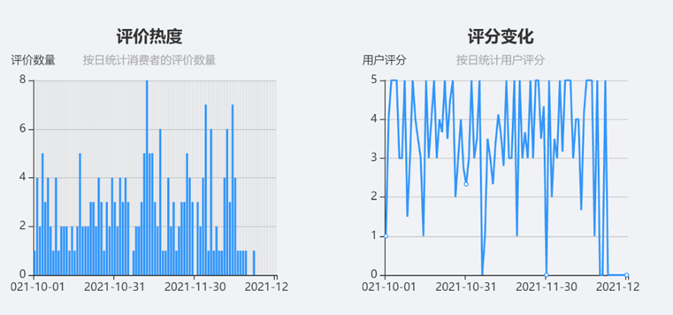
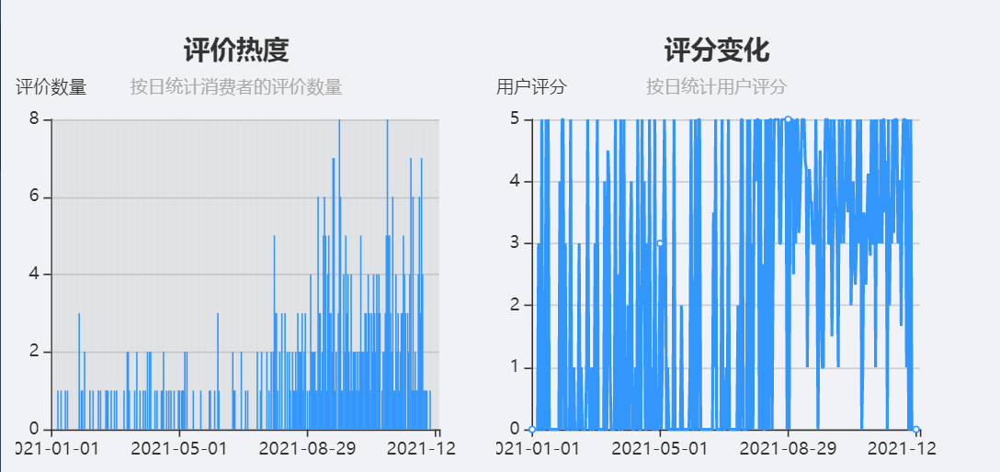
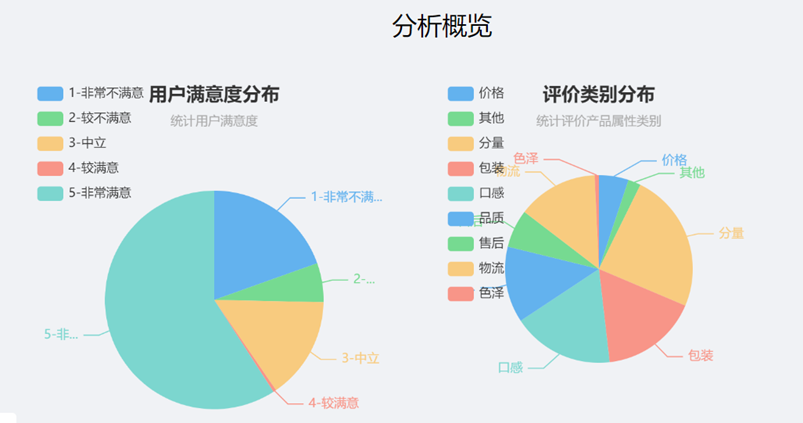
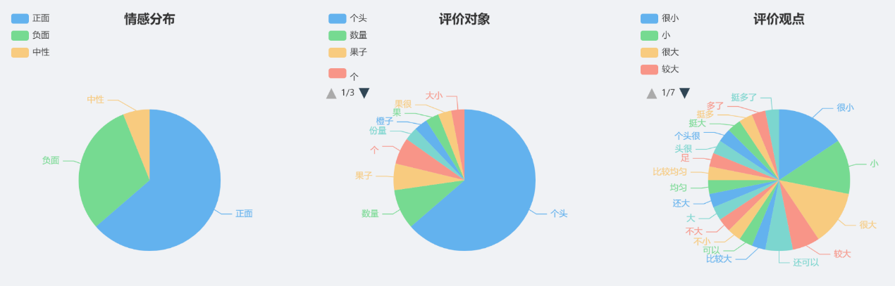
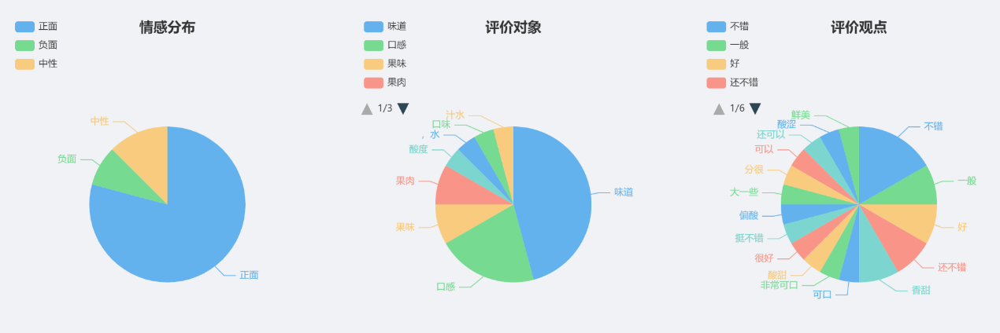
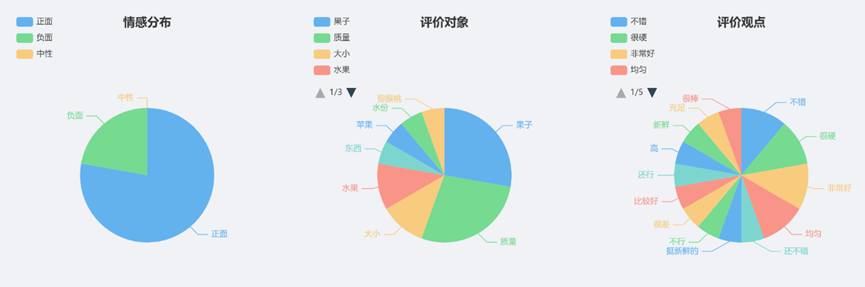
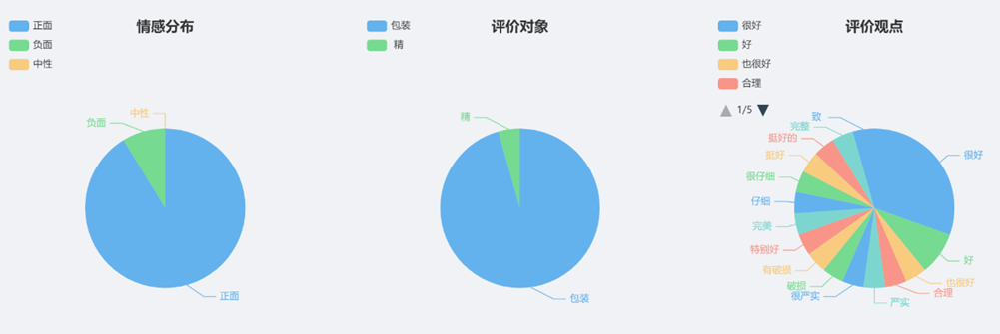
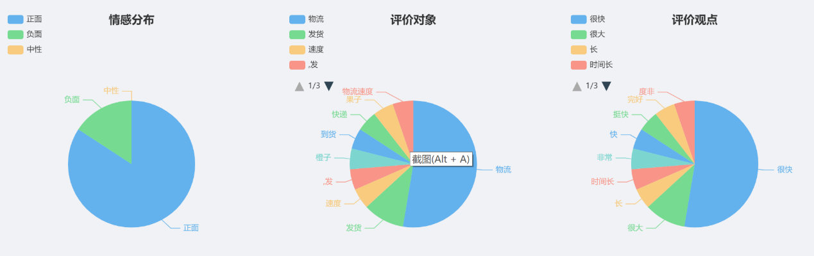
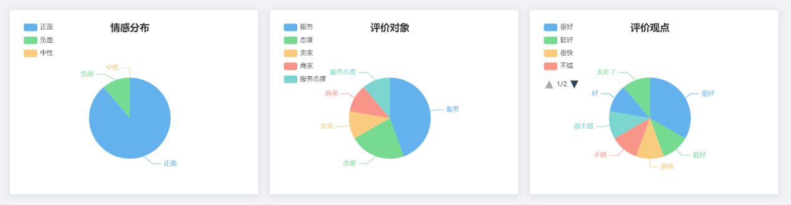
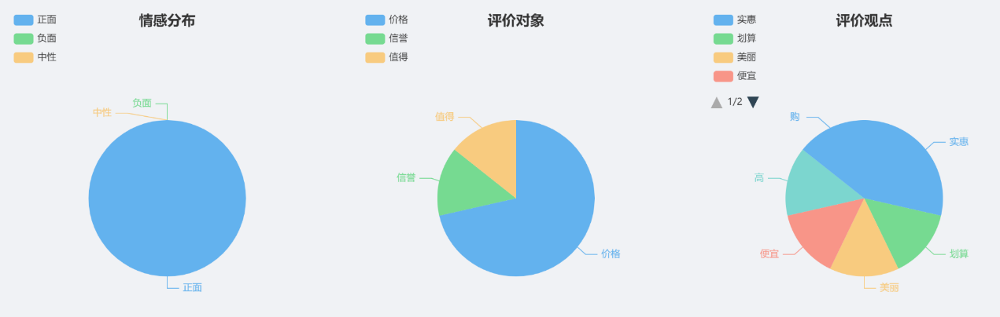

江西奉新猕猴桃2021年第四季度销售白皮书
奉新猕猴桃成熟采摘期主要集中在9月下旬至10月中下旬，第四季度是奉新猕猴桃上市后销售的旺季。
一、
江西奉新猕猴桃2021第四季度日消费热度和消费评价概况
1.消费热度：11月内消费热度最高，单日评论数量峰值可达8条
9月下旬至10月中下旬为奉新县不同品种猕猴桃的集中采摘期，由评价热度可见，10月奉新猕猴桃的单日评论量平均为每日3个左右，进入11月后热度猛增，最高达到峰值每日8条，平均热度为每日4-5个左右，可见11月猕猴桃采摘后大规模流入市场带来了消费热度的集中增加，且每日均有消费热度，奉新猕猴桃的市场基础较好。

2.消费评价：整体消费评价处于较高水平，但也存在个别评价较低的消费者
2021年第四季度内，消费者对江西奉新猕猴桃的评价大多为5分，但也存在极少数1分评价，整体均分在3分以上，综合来讲消费者对奉新猕猴桃评价处于较高水平。
3.全年热度对比

由奉新猕猴桃2021年一年的评价热度和评分数据可以看出，猕猴桃作为农产品具有强烈的季节属性，在成熟上市期即第三四季度热度较高，且相应的评分较好，而在第一第二季度货品本就不充足，能够售卖的多为冷库存储或温室栽培的猕猴桃，作为非应季水果虽然有日常的消费，但消费热度较低且消费者对其评价参差不齐。可见消费者对应季上市期的奉新猕猴桃消费热度和满意度更高。
二、
江西奉新猕猴桃2021年第四季度消费者整体满意度分析
1.用户满意度概况：仅有59.11%的消费者完全满意，消费者满意度可提升空间较高

有19.56%的消费者对奉新猕猴桃的评价是非常不满意，有5.78%的消费者为较不满意，也有15.11%的消费者持中立态度，完全满意的客户仅占60%左右，可见奉新猕猴桃还需再提升消费者满意度方面多下功夫。
2.用户评价概况：分量、口感、品质及包装是消费者评价最为侧重的地方
24.08%的评价与分量有关，是消费者评价中提及最高频次的产品因素，其次便是口感、品质、包装、物流及售后等。
三．江西奉新猕猴桃2021年第四季度消费者对产品属性具体评价分析
（分析排序按照评论频次从高到低：分量、口感及品质、包装、物流、售后、价格）
在对猕猴桃分量及大小的评价中，虽然正面评价占据大多数，但是负面评价比例高达30.3%，评价的侧重点主要是猕猴桃的个头和分量，在分量方面，没有负面评价，都认可分量足，但是在个头方面，有近30%消费者认为个头较小，综合可见负面评价主要来自部分消费者认为猕猴桃的个头小。

2.口感和品质
在对其口感评价方面仅有8.33%的消费者认为该产品口感酸涩，高达90%的消费者对其口感满意，认为该产品非常可口。但在品质评价方面呈现出两极分化状态，77.78%的消费者对其品质是正向评价，有22.22%的消费者认为该产品的品质较差，主要是因为产品到手时还很硬。


3.包装
91.3%的消费者对该产品包装十分满意，仅有8.7%的消费者对其持负面评价，因为存在包裹破损不完整的情况，综合而言产品包装质量较好，负面评价不排除为物流暴力运输的影响。

4.物流
84.21%的消费者对该产品的物流较为满意，发货速度和到货时长均能满足需求，但也存在15.79%的消费者对其为负面评价，表示时间很长才能收到货，效率较低。可见在物流方面还有较大的提升空间。

5.售后
在售后评价方面，88.89%的消费者十分满意该产品的售后，认为其响应及时，服务态度良好，但也有11.11%的消费者给出了负面评价，认为售后服务较差，可能与客户人员的选择以及售后类型有关。

6.价格
在对其价格评价中，所有消费者均持正面态度，认为该产品价格实惠，商家值得信赖，可见该产品在消费者心中是物有所值、物美价廉的。

总结：综合以上分析，消费者对于奉新猕猴桃的整体评价较高，价格、包装、售后、口感品质等综合评价都很好；其中的负面评价主要集中在部分猕猴桃个头较小、口感酸涩、物流时间长、到手较硬等。
四、江西奉新猕猴桃发展建议
1.指导调控种植户合理搭配早、中、晚熟品种，错峰上市
由评价热度可见，猴桃作为农产品具有强烈的季节属性，集中在9-11月采摘，奉新猕猴桃集中在10月中下旬上市，上市作为应季水果消费热度虽高，但随着采摘的猕猴桃越来越多价格自然会降低，且猕猴桃成熟后集中存放也易腐烂损耗。合理搭配早、中、晚熟品种，分批采摘错峰上市可以分散消费热度，也利于避免价格竞争过度挤压利润空间。
2.产品分类精细化营销，满足不同顾客需求
由以上评论数据可见，对该产品持负面评价的消费者主要认为产品个头较小，有的较硬、且部分存在酸涩。猕猴桃分类上可以根据大小更加细致化，在采摘时就将小果、中果、大果区分开来，给予不同的售卖价格。可以用小果的低价来为商品引流，在购买连接中标明产品属性，根据大小区别定价，让消费者自主选择，这样顾客对其大小也有较为明确的心理预期，可以有效减少负面评论。且可以将小果作为一种促销手段，购买大果搭配赠送部分小果等。针对猕猴桃到手较硬的问题，可以根据顾客的不同地理位置以及预计物流时长，选择不同成熟度果子发送，路途较长的在发货时选取较硬的果子，较近的则发送快要成熟的果子，尽量让顾客收到时不用等太久才熟。
3.品牌化品质化与平价化并行
2021年消费者对该产品的价格评价是十分满意的，所有消费者都认为该产品物美价廉，这当然是好的现象，作为应季水果，好吃平价是十分重要的竞争优势，但第三四季度本身就是各类农产品丰收的季节，市场上农产品供大于求，农产品利润极低，且集中上市容易造成果子积压，从而造成损耗。
在这种情况下在一众物美价廉的产品中脱颖而出，避开恶性的价格竞争获取更好的经济效益成为不得不思考的问题。奉新猕猴桃作为具备国家地理标志证明的农产品，更应该利用好自身优势推进品牌化建设，主要有以下四点建议：
3.1着力于中高端品种：
可以主打金果、金艳等黄、红肉类中高档品种，加大对品种选育、栽培技术等基础科研工作的投入，不断选育扩展新的优质品种，将优质独特的产品塑造成城市名片，不断向中高端市场迈进。
3.2丰富营销媒介，全面布局，扩大品牌影响力：
3.2.1布局内容营销：包括抖音、快手、头条短视频通过自身账号或者与达人合作账号宣传农产品，选择有“三农基因”的内容传作者，如B站UP主”帅农鸟哥“
、”唐小米婆婆“等，或者与本地达人合作。也可在知乎、小红书、公众号、豆瓣、微博这些内容社交平台积极布局营销。
3.2.2借力电子商务：引导和扶持各类猕猴桃生产经营主体积极借助淘宝、拼多多、京东、多多买菜、淘宝买菜等平台售卖产品，借助电商直播平台售卖产品，不同的产品选择不同的渠道，中高端品种可以与盒马、百果园等平台或者优质商超合作，平价品种可以主打薄利多销路线，通过直播、或者线上店铺售卖。
3.2.3加大传统媒体塑造品牌形象方面的投入：奉新猕猴绕这一整体的品牌形象还需进一步巩固，在消费者心中形成独特的心智空间。在进行数字化营销的同时也要注重传统媒体宣传投入，主要包括在知名节目投放广告、在央视投放广告、在本地受欢迎的频道投放广告，以及与权威媒体合作录制节目或在知名节目中植入广告、录制纪录片等，传统媒体通常具有较强的公信力，对产品形象的塑造影响巨大。
4. 升级猕猴桃全线产业链，端到端提升消费体验
种植前：对市场行情做好宏观预测，选育优质品种，并做好品种分布大致规划，指导种植户种植，为其提供技术支持。围绕“提质增效”对部分老果园进行改造提升，
从源头保证产品的品质。种植及采摘：狠抓标准化生产，实行全程生态质量管控，全面提升猕猴桃的生产经营效率，提高商品化处理水平。包装运输：建设一批猕猴桃商品果分选包装厂以及贮藏保鲜冷链物流设施，从消费者评价可以看出，奉新猕猴绕在物流方面还有较大的提升空间，下游物流设施的完善有利于保证产品物流质量降低产品损耗，提高消费者满意度，降低退货率和差评。升级售后服务，可以加强对客服人员的售后培训，提高服务质量。从生产到采摘到运输再到售后，全线把控质量，帮助本地各生产经营主题做大规模、种好果卖好价、做响品牌。
5. 强化相关产业链建设，实现综合品牌效应
充分发挥“中国猕猴桃之乡”品牌效应，以绿色、产业、生态旅游为主题，大力发展猕猴桃及其相关产业，最大化地发挥猕猴桃的生态价值。目前奉新县已连续举办3届猕猴桃文化旅游节，累计接待游客达24 万余人次，旅游综合收入近3亿元。2021年举办猕猴桃文化旅游之采摘节，采摘、观光、体验者达到12万人次，综合效益十分可观。在此基础上可以深挖不断丰富文旅商农一体化的形式，比如通过举办猕猴桃比赛、猕猴桃展会、开设当地特色农产品小型博物馆、拍摄纪录片等多种形式，加强对外沟通交流，形成品牌宣传的协同效应。